교통기사 (2009-03-01 기출문제)
1과목: 교통계획
1. 통행분포(trip distribution)단계에서 사용되는 모형으로 각 교통지구별 유출.입 교통량의 제약조건을 만족시킬 수 있는 범위 내에서 결과를 도출할 수 있도록 프라타모형(Fratar 모형)의 계산과정을 단순화시킨 것은?
- 성장인자모형
- 중력모형
- 디트로이트모형
- 엔트로피모형
(정답률: 85%)

2. 다음 중 대중 교통 수단의 장점과 거리가 먼 것은?
- 에너지 절약
- 교통혼잡의 감소
- 선택적 교통수단
- 주차 수요 유발
(정답률: 100%)
3. 통행희망노선도(Traffic Desire Lines)는 다음 중 어느 조사결과에 의하여 작성될 수 있는가?
- 회전 교통량 조사
- 가로구간별 교통량 조사
- O - D 조사
- 승하차 인원수 조사
(정답률: 91%)
4. 도로구간의 속도를 허용오차 2km/h, 신뢰도는 95%의 수준으로 조사하기 위한 표본 수를 결정하고자 한다. 유사한 도로(모집단)의 속도 표준편차가 10km/h일 때, 최소한 몇 대 이상의 차량속도를 조사해야 하는가?
- 48대
- 64대
- 76대
- 97대
(정답률: 73%)
5. 교통수요 추정을 위한 기초자료로 사용되는 사회경제지표의 예측 모형 중 상한치(K)를 결정한 후 예측하는 기법은?
- 지수곡선법
- 최소제곱법
- 대수곡선법
- 로지스틱곡선법
(정답률: 알수없음)
6. 통행발생량(Trip Generation)을 추정하기 위하여 각 변수를 이용하여 여러 회귀식을 만든 경우 적정 회귀식을 선택하는 방법이 가장 옳은 것은?
- 종속변수를 설명하는 독립변수의 숫자가 많은 것을 선택한다.
- 결정계수(coefficient of determination : R2)
- 가능한 상수항의 값이 작은 회귀식을 선택한다.
- 종속변수와 독립변수 간의 부호가 적정한 회귀식을 선택한다.
(정답률: 79%)
7. 다음 중 교통시설사업의 경제성을 평가하는데 고려되는 지표가 아닌 것은?
- 내부수익률(IRR)
- 편익비용비(B/C)
- 순현재가치(NPV)
- 잠재가격(SP)
(정답률: 알수없음)
8. 교통계획과정에서 승객이나 화물이동의 흐름을 분석하고 추정하기 위한 단위지역인 교통 존(traffic zone)의 설정기준이 옳은 것은?
- 가급적 다양한 토지이용이 포함되도록 한다.
- 자료수집의 용이성을 위하여 행정구역과 가급적 일치시킨다.
- 주요 간선도로는 될 수 있는 한 존 경계선과 일치하지 않도록 하여야 한다.
- 소규모 도시의 주거지역은 대개 10,000명 정도가 포함되도록 설정한다.
(정답률: 알수없음)
9. 지하철과 버스에 대한 효용함수 및 통행특성자료가 아래와 같을 때, 로짓모형을 이용한 교통수단별 선택확률이 모두 옳은 것은? (단, 효용함수 V = -0.06(0.5X1 + 0.002X2) 이다.)
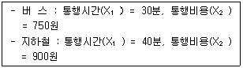
- 버스 : 57.9%, 지하철 : 42.1%
- 버스 : 42.1%, 지하철 : 57.9%
- 버스 : 47.9%, 지하철 : 52.1%
- 버스 : 52.1%, 지하철 : 47.9%
(정답률: 82%)
10. 어느 쇼핑센터의 주차발생량이 4.65(대/1000m2), 주차이용효율(e)은 80.5%이며 건물의 연면적이 22,350m2일 때 4년 후의 주차수요는? (단, 주차 발생량은 연평균 5%씩 등비급수로 증가한다.)
- 약 127대
- 약 137대
- 약 147대
- 약 157대
(정답률: 43%)
11. 4단계 교통수요 추정 모형에 비하여 개별행태모형이 갖는 특징에 대한 설명이 옳은 것은?
- 보다 중·장기적인 교통계획의 수립에 유용하다.
- 존별 집계자료에 근거하여 개발된 모형이다.
- 비용이 많이 들고 결과 도출에 시간이 오래 걸린다.
- 교통존에 한정하지 않기 때문에 어떤 지역에도 적용이 가능하다.
(정답률: 100%)
12. 다음 중 교통의 3대 요소로 보기 어려운 것은?
- 교통주체
- 교통수단
- 교통시설
- 교통계획
(정답률: 84%)
13. 스크린라인(screenline)조사의 주요 목적은 무엇인가?
- 분석지역안의 내부통행에 대한 검증
- 분석대상지역의 가로망별 교통량에 대한 검증
- 각 분석구간의 기종점 통행량에 대한 검증
- 각 지역통행의 수송분담율에 대한 검증
(정답률: 알수없음)
14. TSM(Transportation System Management) 기법의 유형 중 교통수요(차량 수요)만을 감소시키는 효과를 주는 것은?
- 카풀(carpooling)유도
- 신호주기의 개선
- 교차로에서의 도류화
- 도로 기하구조 개선
(정답률: 89%)
15. 다음 중 장·단기 교통계획의 차이점에 대한 설명이 옳지 않은 것은?
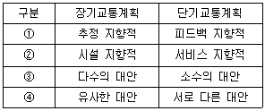
- ①
- ②
- ③
- ④
(정답률: 알수없음)
16. 첨단도로교통체계(ITS)중 운전자가 안전하고 효율적인 운행을 할 수 있도록 차량에 내장된 장치가 운전자를 제어하는 것으로, 자동운행속도장치, 사고경보장치, 자동정지장치 등과 관련이 있는 것은?
- ATMS
- ATIS
- APTS
- AVCS
(정답률: 50%)
17. 교통계획을 기간, 계획대상, 공간적 범위에 따라 분류할 때 계획대상에 따른 유형에 속하는 것은?
- 지역교통계획
- 장기교통계획
- 가로망계획
- 국가교통계획
(정답률: 60%)
18. 현재의 존간 통행량이 아래와 같을 때 균일성장률법을 이용하여 장래의 존별 통행량을 구한 값이 옳은 것은? (단, t'ij는 장래의 존 I 와 j 간이 통행량을 뜻한다.)
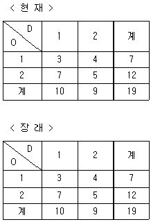
- t'11 = 9, t'12 = 12, t'21 = 21, t'22 = 15
- t'11 = 10, t'12 = 11, t'21 = 16, t'22 = 20
- t'11 = 11, t'12 = 10, t'21 = 19, t'22 = 17
- t'11 = 12, t'12 = 10, t'21 = 22, t'22 = 19
(정답률: 65%)
19. 교통서비스의 공급에 공공이 개입하는 이유로 적합하지 않는 것은?
- 교통서비스는 다른 재화나 용역과는 달리 외부효과가 작기 때문이다.
- 교통시설에 대한 투자와 관리는 도시전역에 커다란 영향을 미치기 때문이다.
- 서비스의 효율성과 형평성을 확보하기 위함이다.
- 교통은 공공재이므로 사적 독점으로부터 나타나는 부작용을 방지하기 위함이다.
(정답률: 알수없음)
20. 직장인 A가 하루 동안 발생시킨 목적 통행수는 얼마인가?
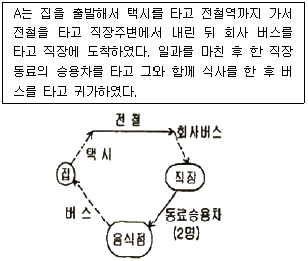
- 1
- 3
- 5
- 7
(정답률: 90%)
2과목: 교통공학
21. 다음 중 속도-밀도 모형에 대한 설명이 가장 옳은 것은?
- Greenshield의 직선모형은 사용하기가 간편하며 밀도가 매우 높거나 낮은 경우에도 직선관계가 나타낸다.
- Greenberg의 로그모형은 밀도가 높은 부분에서 정확한 관계를 추출할 수 있으나, 밀도가 낮은 경우 속도를 밀도로 설명하기 힘들어진다.
- Underwood의 지수모형은 밀도가 높은 경우의 속도를 정확히 산출하기 때문에 고속에서의 속도 추정값이 현장 측정값과 동일하게 나타난다.
- Greenberg의 식에 의하면 밀도가 최대가 되면 속도는 최대 속도의 1/2 이 된다.
(정답률: 50%)
22. 60kph로 주행하던 차량이 장애물을 보고 정지할 수 있는 최소정지거리는?
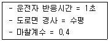
- 약 36.7m
- 약 52.1m
- 약 76.9m
- 약 95.4m
(정답률: 75%)
23. 한 가로의 첨두시간 교통량이 1,500대/시간이고 첨두시간 중 15분 최대교통량이 450대일 때 첨두시간계수(PHF)는?
- 0.78
- 0.83
- 0.88
- 0.93
(정답률: 62%)
24. 원하는 속도 선택의 자유도는 비교적 높은 편이지만, 교통류 내 다른 운전자의 출현으로 각 개인의 행동이 다소 영향을 받게되는 교통류의 서비스 수준은?
- LOS A
- LOS B
- LOS C
- LOS D
(정답률: 82%)
25. 평탄한 도로에 트럭 20%가 운행하고 있을 때, 대형차 혼입에 따른 보정계수는? (단, 평지에서 트럭의 승용차 환산계수는 1.5이다.)
- 약 0.81
- 약 0.85
- 약 0.91
- 약 0.95
(정답률: 70%)
26. 어떤 보도에 대하여 시간당 보행자수를 6,000명, 보행자 밀도를 0.6인/m2이 되도록 설계하고자 할 때 필요한 보도폭은? (단, 보행자 속도는 1.2m/sec로 한다.)
- 1.93m
- 2.31m
- 2.82m
- 3.⑤m
(정답률: 50%)
27. 노면과 타이어 상태에 따른 미끄럼 마찰계수가 가장 큰 상태는?
- 습윤-마모된 타이어
- 건조-양호한 타이어
- 건조-마모된 타이어
- 습윤-양호한 타이어
(정답률: 42%)
28. 어느 연속 교통류의 교통량은 2,250대/시, 공간평균속도는 60km/시일 때 밀도는 얼마인가?
- 18.8 대/km
- 37.5 대/km
- 67.7 대/km
- 100.0 대/km
(정답률: 60%)
29. 신호교차로가 90초의 주기로 운영되고, 임계차로 군의 교통량비의 합이 0.72일 때, 교차로 전체의 임계 V/c 비 값으로 0.76을 얻었다. 이 교차로의 주기당 총 손실시간은?
- 3초
- 5초
- 7초
- 9초
(정답률: 46%)
30. 임의로 도착하는 차량간의 간격을 계산할 때 이용되는 확률분포 모형은?
- 포아송분포
- 음지수분포
- 정규분포
- 감마분포
(정답률: 알수없음)
31. 감응루프(Inductive Loop) 검지기를 이용하여 얻을 수 있는 교통자료가 아닌 것은?
- 승차인원조사
- 점유율조사
- 속도조사
- 교통량조사
(정답률: 알수없음)
32. 다음 중 2차로도로의 서비스수준을 판별하는 효과척도는? (단, 도로용량편람 기준)
- 밀도
- 평균통행속도
- 교통량 대 용량비
- 총지체율
(정답률: 73%)
33. 차량 A가 10m/sec의 속도로 아래와 같은 조건을 가진 교차로에 접근하고 있을 때 황색신호시간은 얼마인가?
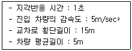
- 2.0초
- 4.0초
- 6.5초
- 8.5초
(정답률: 37%)
34. 다음 중 차량이 움직이는데 발생하는 엔진 외부저항, 즉 주행저항에 속하는 것을 모두 고른 것은?
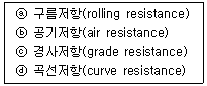
- ⓐ, ⓑ
- ⓐ, ⓑ, ⓒ
- ⓑ, ⓒ, ⓓ
- ⓐ, ⓑ, ⓒ, ⓓ
(정답률: 82%)
35. 교통통제 시설의 도움없이 상당히 긴 도로를 따라 가면서 동일 방향의 두 교통류가 엇갈리면서 차로를 변경하는 교통 현상이 발생하는 구간을 무엇이라 하는가?
- 분류구간
- 합류구간
- 기본구간
- 엇갈림구간
(정답률: 93%)
36. 다음은 녹색시간 동안에 방출되는 용량이 한 주기 동안의 도착량보다 많은 경우, 신호 교차로에서의 대기행렬모형이다. 정지하는 차량의 비율(Ps)을 옳게 나타낸 것은? (단, r : 유호적색시간(초), g : 유효녹색시간(초), t : 시간, q : 한 접근로이 평균 도착교통류율(pcu/초), t0 : 녹색신호의 시작에서부터 대기행렬이 완전히 소멸되는 시간)
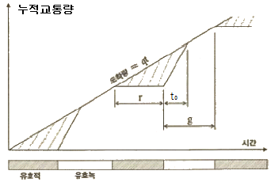
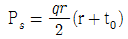
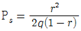
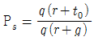
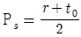
(정답률: 65%)
37. 다음 그림은 2개 집단의 차량속도분포를 나타내는 것이다. 분포 A와 B의 특성에 대한 설명으로 가장 거리가 먼 것은?
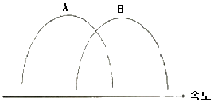
- 분포 A는 분포 B에 비하여 평균속도는 낮다.
- 분포 A와 분포 B의 분산은 유사하다.
- 분포 A와 분포 B는 표준편차가 유사하다.
- 분포 A에 속하는 모든 차량들은 분포 B에 속하는 차량들보다 속도가 낮다.
(정답률: 62%)
38. 어느 도로구간에서 5대의 차량에 대한 속도를 측정한 결과 아래와 같았다면, 이들의 공간평균속도는 얼마인가?
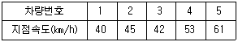
- 47.04km/시
- 46.43km/시
- 45.91km/시
- 43.26km/시
(정답률: 50%)
39. 고속도로의 특정 지점에서 무작위로 도착하는 차량 교통량이 600대/시 일 경우, 향후 30초 동안 4대의 차량이 도착할 확률은?
- 약 13%
- 약 18%
- 약 24%
- 약 32%
(정답률: 50%)
40. 외부자극에 대하 인간의 신체적 반응(PIEV)에 해당하지 않는 것은?
- 지각
- 판단
- 전달
- 반응
(정답률: 85%)
3과목: 교통시설
41. 정지시거에 관한 아래 설명 중 ( )안에 알맞은 것은?
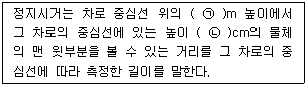
- ㉠ 1, ㉡ 10
- ㉠ 1, ㉡ 15
- ㉠ 100, ㉡ 15
- ㉠ 100, ㉡ 12
(정답률: 84%)
42. 도로의 구조·시설 기준에 관한 규칙상 보도의 유효폭은 보행자의 통행량과 주변 토지 이용 상황을 고려하여 결정하되 최소 몇 미터 이상으로 하여야 하는가? (단, 지방지역의 도로와 도시지역의 국지도로에서 지형상 불가능하거나 기존 도로의 증설·개설 시 불가피하다고 인정되는 경우는 제외함)
- 4.0m
- 3.0m
- 2.0m
- 1.5m
(정답률: 70%)
43. 고속도로 비상주차대의 일반적인 설치 간격으로 가장 바람직한 것은?
- 300m
- 500m
- 650m
- 750m
(정답률: 알수없음)
44. 다음 중 도로의 구분, 설계속도, 지역에 따른 차로의 최소 폭 기준이 옳지 않은 것은?
- 고속도로-지방지역-3.5m 이상
- 고속도로-도시지역-3.0m 이상
- 일반도로-설계속도 80kph 이상-도시지역-3.25m 이상
- 일반도로-설계속도 60kph 미만-지방지역-3.0m 이상
(정답률: 47%)
45. 도로와 철도가 평면교차하는 경우 교차각은 최소 얼마 이상으로 하여야 하는가?
- 15° 이상
- 30° 이상
- 45° 이상
- 60° 이상
(정답률: 82%)
46. 양방향 2차로 도로에서 앞지르기시거를 결정하기 위해 고려하여야 할 사항이 아닌 것은?
- 고속 자동차가 앞지르기가 가능하다고 판단하고 가속하여 반대편 차로로 진입하기 직전까지 주행한 거리
- 고속 자동차가 반대편 차로로 진입하여 앞지르기할 때까지 주행하는 거리
- 고속 자동차가 앞지르기를 완료한 후 반대편 차로의 자동차와의 여유거리
- 고속 자동차가 앞지르기를 완료한 후 마주오는 자동차가 주행한 거리
(정답률: 70%)
47. 2차로 도로에서 앞지르기시거가 확보되지 아니하는 구간으로 교통용량 및 안전성 등을 검토하여 필요하다고 인정되는 경우에 저속자동차가 다른 자동차에게 통행을 양보할 수 있도록 설치하는 것은?
- 대피차로
- 길어깨
- 양보차로
- 측도
(정답률: 86%)
48. 아래 그림과 같이 +3%의 경사와 -3% 경사인 두지점 사이에 500m 길이의 종단곡선을 설치한 경우, 종단경사 변화량에 대한 종단곡선 길이의 비는?
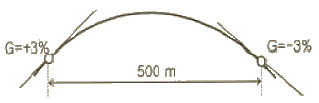
- 97.2(m/%)
- 83.3(m/%)
- 62.7(m/%)
- 50.4(m/%)
(정답률: 64%)
49. 시거에 의한 종단곡선의 최소길이를 산정할 때 오목곡선의 경우, 시거(S)가 종단곡선의 길이(L)보다 짧을 때의 산정방식은? (단, A : 종단구배의 변화량(%)임)
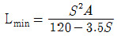
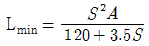
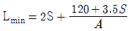
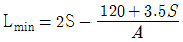
(정답률: 84%)
50. 설계속도가 60km/h인 도로의 최소 평면곡선반경은? (단, 편경사 I=6%, 횡방향 마찰계수 f=0.12)
- 104.27m
- 114.21m
- 128.84m
- 157.48m
(정답률: 알수없음)
51. 다음 중 도로의 선형설계에서 가장 바람직한 조화를 이루는 평면선형과 종단선형의 조합은?
- 될 수 있는 한 하나의 평면곡선에 하나의 종단곡선을 대응시키도록 한다.
- 블록형 종단곡선의 정정부에 급한 평면곡선반경을 삽입한다.
- 같은 방향으로 굴곡하는 두 곡선 사이에 짧은 직선을 삽입한다.
- 오목형 종단곡선의 저점부에 배향곡선의 변곡점을 둔다.
(정답률: 82%)
52. 네 갈래 교차 인터체인지의 대표적 형식 중 하나로 용지가 적게 들고 교통의 우회거리가 짧아 경제적이지만 접속도로와의 연결로 접속부분에서 생기는 교차부의 도로교통용량이 작아지는 결점이 있는 불완전 입체교차형은?
- 불완전클로버형
- 준직결형
- 프럼펫형(4갈래)
- 다이아몬드형
(정답률: 알수없음)
53. 주차장법상 자주식 주차장으로서 지하식 또는 건축물식에 의한 노외주차장에는 바닥으로부터 58cm의 높이에 있는 지점이 평균 몇 룩스 이상의 조도를 유지할 수 있는 조명장치를 설치하여야 하는가?
- 40룩스
- 50룩스
- 60룩스
- 70룩스
(정답률: 70%)
54. 다음과 같은 특징을 갖는 시거는?
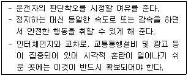
- 종단시거
- 앞지르기시거
- 피주시거
- 평면시거
(정답률: 75%)
55. 다음 중앙분리대에 대한 설명 중 옳지 않은 것은?
- 차로수가 4차로 이상인 고속도로에 대해서는 반드시 중앙분리대를 설치하는 것으로 한다.
- 중앙분리대는 분리대와 측대로 구성된다.
- 중앙분리대이 표준폭은 도시지역 고속도로와 일반도로의 경우 모두 1.0m 이상으로 규정한다.
- 중앙분리대 설계에 있어서의 기본요소에는 연석의 형상, 분리대 표면의 형상, 분리대 표면의 처리방식이 있다.
(정답률: 75%)
56. 다음 중 도로가 갖고 있는 기하구조형태와 교통류의 특성을 기초로 하여 접근성과 이동성이 기능에 따라 도로를 분류할 때 이용되는 특성으로 가장 거리가 먼 것은?
- 평균통행거리
- 평균주행속도
- 사고건수
- 교통량
(정답률: 67%)
57. 다음 중 국도와 같은 소통위주의 기능을 갖는 도로에 다른 도로를 연결하고자 할 때 연결허가를 금지하는 구간 기준에 해당하는 것은?
- 터널 등 시거가 차단되는 시설물로부터 500m 이상 떨어진 구간
- 교량과 떨어져 있어 변속차로를 설치할 수 있는 구간
- 종단경사가 평지에서 5%, 산지에서 8%를 초과하는 구간
- 곡선반경이 500m 이상으로 시거를 확보한 구간
(정답률: 84%)
58. 연결도로의 설계속도를 적용할 때의 주의사항에 대한 설명이 옳지 않은 것은?
- 이용 교통량이 많을 것으로 예상되는 연결로는 본선의 설계기준을 적용하여 설계한다.
- 본선의 분류단 부근에는 보통 주행속도의 변화가 있으므로, 속도변화에 적합한 완화구간을 설치하여 운전자가 주행속도를 자연스럽게 바꿀 수 있도록 유도한다.
- 연결로의 실제 주행속도는 선형에 따라 변하므로 편경사 등의 기하구조를 설계할 때는 실제 주행속도에 대한 고려가 필요 없다.
- 하급도로 설계속도가 60km/h 이하인 경우의 연결로는 루프연결로일 경우 설계속도의 최소값으로 30km/h를 채택할 수 있다.
(정답률: 80%)
59. 좌·우회전 교통량이 비교적 많거나 교차로에서의 시거가 제한되어 있는 경우, 특히 버스가 좌회전할 때 좋은 버스정거장의 위치는?
- 원측정거장(far-side stop)
- 근측정거장(near-side stop)
- 블록중간정거장(midblock stop)
- 논스톱정거장
(정답률: 80%)
60. 도로가 건설될 지역의 AADT가 59,000대/일, 설계시간계수(K)가. 0.09, 중방향계수(D)가. 0.60, 첨두시간계수(PHF)가 0.90인 지역의 첨두 설계시간 교통량(PDDHV)은?
- 2,967 대/시/방향
- 3,186 대/시/방향
- 3,540 대/시/방향
- 7,965 대/시/방향
(정답률: 67%)
4과목: 도시계획개론
61. 현재 A도시의 인구가 300만명이고 연평균 증가율이 4%라면 10년 후의 추정인구는 얼마인가? (단, 등차급수에 의해 증가한다고 가정한다.)
- 340만명
- 400만명
- 420만명
- 440만명
(정답률: 알수없음)
62. 도시 미화운동을 최초로 시행한 도시는?
- New York
- Letchworth
- Madrid
- Chicago
(정답률: 알수없음)
63. j지역에서 I산업의 입지계수(LQ)에 관한 설명이 옳지 않은 것은?
- LQ = 1 이면 j지역의 i산업은 쇠퇴하고 있다.
- LQ ＜ 1 이면 j지역의 i산업은 수입의존형이다.
- LQ ＞ 1 이면 j지역의 I산업은 수출산업이다.
- LQ = 0 이면 j지역의 i산업은 존재하지 않는다.
(정답률: 알수없음)
64. 중력모형(gravity model)을 이용한 도시세력권의 확정 방법에서 A도시 인구가 20만명, B도시 인구가 5만명이고 A시와 B시 간의 거리가 15km일 때 B시에서 세력권 분기점까지의 거리는?
- 5km
- 7.5km
- 10km
- 15km
(정답률: 알수없음)
65. 국토의 계획 및 이용에 관한 법률에 의한 용도지역의 종류 중 관리지역에 해당되지 않은 것은?
- 보존관리지역
- 보전관리지역
- 생산관리지역
- 계획관리지역
(정답률: 46%)
66. 토지이용이 교통에 미치는 영향을 교통수요로 측정한다면 교통이 토지이용에 미치는 영향은 어떤 특성으로 나타낼 수 있는가?
- 접근성
- 경제성
- 합리성
- 복잡성
(정답률: 알수없음)
67. 케빈 린치(Kevin Lynch)가 주장한 도시경관 이미지의 구성요소에 해당하지 않는 것은?
- 통로(path)
- 경계(edge)
- 상징물(landmark)
- 광장(openapace)
(정답률: 62%)
68. 다음 중 수퍼블록(super block)의 장점과 거리가 먼 것은?
- 완전한 보차분리가 가능하다.
- 전통적인 가로경관은 유지가 가능하다.
- 충분한 공동의 오픈스페이스 확보가 가능하다.
- 건물의 집약화로 인한 고층화·효율화가 가능하다.
(정답률: 알수없음)
69. 용도지역별 도로율에 있어 주거지역의 도로율 기준은?
- 5% 이상 ~ 10% 미만
- 10% 이상 ~ 20% 미만
- 20% 이상 ~ 30% 미만
- 25% 이상 ~ 35% 미만
(정답률: 28%)
70. 토지 이용에 관한 이론 중 뒤넨이 체계화한 농업적 토지이용 모델의 가정에 해당하지 않는 것은?
- 농업지역의 중심에 있는 하나의 도시는 잉여생산품이 유일한 시장이다.
- 농부들은 경제적인 인간으로서 행동한다.
- 특정작물의 시장가격은 생산성에 의해서 좌우된다.
- 운송수단은 오직 한 가지만 있으며 수송비는 거리에 정비례한다.
(정답률: 알수없음)
71. 다음 중 인구성장이 초기에는 완만하다가 일정 기간이 지나면 급속한 증가율을 나타내고, 또 일정 기간이 지나면 그 증가율이 점차 감소하여 결국에는 인구가 일정 수준을 유지하는 인구 성장 경로를 분석하는데 적합한 것은?
- 최소자승법
- 로지스틱곡선법
- 등비급수법
- 지수함수법
(정답률: 알수없음)
72. 다음 중에서 가장 상위 공간계획은?
- 도시관리계획
- 국토계획
- 수도권정비계획
- 도시기본계획
(정답률: 60%)
73. 다음의 조건을 만족하는 사업지역이 수요면적은?
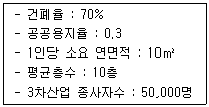
- 8.2ha
- 10.2ha
- 12.2ha
- 14.2ha
(정답률: 알수없음)
74. 토지구획정리사업에서 사업시행 전에 존재하던 권리관계에 변동을 가하지 않고 원래 토지 소유자의 토지 위치, 지적, 토지이용상황 및 환경 등을 고려하여 사업시행 후 새로이 조성된 대지에 기존의 권리를 이전하는 행위를 무엇이라 하는가?
- 체비지
- 환지
- 감보
- 지목변경
(정답률: 75%)
75. 교통수단 간 연계방법 중 자택에서 가까운 역까지 자기의 승용차를 직접 운전한 후 주차하고 역을 이용하여 도심까지 통행하는 방법은?
- 파크앤라이드(park-and ride)
- 키스앤라이드(kiss-and ride)
- 허그앤라이드(hug-and ride)
- 사이클앤라이드(cycle-and ride)
(정답률: 알수없음)
76. 도시계획시설로서의 도로의 기능별 구분과 그 특성에 대한 설명이 옳지 않은 것은?
- 도시고속도로 - 도시지역에 존재하는 자동차 전용도로로써 출입제한의 기능을 갖추면서 대량의 교통을 신속하게 연결하는 도로다.
- 주간선도로 - 시·군내 주요 지역을 연결하고 시·군의 골격을 형성하는 도로이다.
- 특수도로 - 보행자전용도로, 자전거전용도로 등 자동차외의 교통에 전용되는 도로이다.
- 국지도로 - 가구를 구획하는 도로다.
(정답률: 알수없음)
77. 다음 중 도시의 토지와 시설에 대한 물리적 계획이 3대 요소에 속하지 않는 것은?
- 밀도
- 인구
- 배치
- 동선
(정답률: 70%)
78. 가구내부의 국지도로망 구성형식 중 막다른 도로의 형태로 통과교통이 최대한 배제되고 부정형적인 지형에도 적용이 용이하며 주거환경의 쾌적성과 안정성을 모두 확보할 수 있는 것은?
- 격자형
- T자형
- 굴데삭형
- 루프형
(정답률: 알수없음)
79. 국토해양부장관이 도시의 무질서한 확산을 방지하고 도시주변의 자연환경을 보전하여 도시민이 건전한 생활환경을 확보하기 위하여 도시의 개발을 제한할 필요가 있다고 인정되어 도시관리계획으로 결정하는 것은?
- 특정시설제한구역
- 개발제한구역
- 도시자연공원구역
- 시가화조정구역
(정답률: 알수없음)
80. 다음 중 제3차 국토종합개발계획(1992~1999)의 기본 목표에 해당되지 않는 것은?
- 생산적·자원절약적 국토이용 체계의 구축
- 거점개발방식의 확산과 성장거점 도시의 육성
- 국민복지의 향상과 국토환경의 보존
- 남북 통일 대비 기반 조성
(정답률: 70%)
5과목: 교통관계법규
81. 다음 중 도로교통법상 모든 차의 운전자들이 주차를 해서는 아니되는 장소 기준이 옳지 않는 것은?
- 소화전 또는 소화용방화물통의 흡수구나 흡수관을 넣는 구멍으로부터 5미터 이내의 곳
- 화재경보기로부터 5미터 이내의 곳
- 터널 안 및 다리 위
- 도로공사를 하고 있는 경우에는 그 공사구역의 양쪽 가장자리로부터 5미터 이내의 곳
(정답률: 37%)
82. 도로교통법상 경찰서장이 교통에 방해될 우려가 있는 공작물에 대한 관리자의 성명·주소를 알 수 없어 스스로 이를 제거하여 보관한 때에는 그 공작물을 보관한 날부터 몇 일간 경찰서의 게시판에 관련 사항을 공고하여야 하는가?
- 14일
- 10일
- 7일
- 5일
(정답률: 알수없음)
83. 도시교통정비 촉진법상 시장이나 군수가 도시교통정비 기본계획을 수립한 경우 대통령령으로 정하는 바에 따라 기본계획을 구체화하여 몇 년 단위의 도시교통정비 중기계획을 수립하여야 하는가?(2013년 ⑤월 22일 개정된 규정 적용됨)
- 20년
- 10년
- 7년
- 5년
(정답률: 50%)
84. 현행 주차장법상 지하식 또는 건축물식 노외주차장의 차로에 대한 기준이 옳은 것은?
- 높이는 주차바닥면으로부터 2.0m 이상이어야 한다.
- 굴곡부는 자동차가 4m 이상의 내변반경으로 회전이 가능하도록 하여야 한다.
- 경사로의 종단경사도는 직선부분에서는 17%, 곡선부분에서는 14%를 초과하여서는 아니 된다.
- 주차대수규모가 50대 이상인 경우의 경사로는 너비 5m 이상인 2차선의 차로를 확보하거나 진ㆍ출입차로를 통합하여야 한다.
(정답률: 50%)
85. 다음 중 국토의 계획 및 이용에 관한 법률상 광역도시계획에 포함되어야 할 사항으로 가장 거리가 먼 것은?
- 광역계획권의 교통 및 물류유통체계에 관한 사항
- 광역계획권의 문화·여가공간 및 방재에 관한 사항
- 광역계획권의 녹지관리체계와 환경보전에 관한 사항
- 광역계획권의 기후·지형·자원배분에 관한 사항
(정답률: 50%)
86. 다음 중 도시지역이 도로유형에 따른 설계속도 기준이 옳은 것은?
- 고속도로 : 120km/h 이상
- 주간선도로 : 100km/h 이상
- 보조간선도로 : 60km/h 이상
- 국지도로 : 50km/h 이상
(정답률: 알수없음)
87. 다음 중 도로법상 지방도에 해당하는 구간이 아닌 것은?
- 도청 소재지에서 시청 또는 군청 소재지에 이르는 도로
- 시청 또는 군청 소재지를 서로 연결하는 도로
- 중요 도시, 지정항만, 중요 비행장, 관광지 등을 연결하며 고속국도와 함께 국가 기간 도로망을 이루는 도로
- 도 또는 특별자치도에 있는 비행장, 항만 또는 역에서 이들과 밀접한 관계가 있는 고속도로, 국도 또는 지방도를 연결하는 도로
(정답률: 58%)
88. 다음 중 도로교통법상의 앞지르기에 대한 설명이 옳은 것은?
- 모든 차의 운전자는 다른 차를 앞지르고자 하는 때에는 앞차의 우측으로 통행하여야 한다.
- 모든 차의 운전자는 교차로나 터널 안에서 다른 차를 앞지를 수 없다.
- 모든 차의 운전자는 앞차가 다른 차를 앞지르고 있거나 앞지르고자 하는 경우에 앞차를 앞지르기 할 수 있다.
- 자동차의 운전자는 고속도로에서 다른 차를 앞지르고자 하는 때에는 방향지식, 등화 또는 경음기를 사용하여 행정안전부령이 정하는 차로로 안전하게 통행하여야 한다.
(정답률: 알수없음)
89. 국토해양부장관 또는 지정행정기관의 장이 교통안전법에 따른 권한의 일부를 대통령령이 정하는 바에 따라 위임할 때, 다음 중 그 권한을 위임받는 자에 해당하지 않는 경우는? (단, 국토해양부장관 또는 지정행기관의 장의 승인을 얻어 재위임을 하는 경우도 포함)
- 도지사
- 구청장
- 시장
- 경찰청장
(정답률: 10%)
90. 교통안전법상 국토해양부장관은 국가의 전반적인 교통안전수준의 향상을 위하여 국가교통안전기본계획을 몇 년 단위로 수립하여야 하는가?
- 1년
- 3년
- 5년
- 7년
(정답률: 알수없음)
91. 다음 중 도로교통법상 차마의 운전자가 도로의 중앙이나 좌측부분을 통행할 수 있는 경우의 기준으로 옳지 않은 것은?
- 도로가 일방통행인 경우
- 도로의 파손, 도로공사나 그 밖의 장애 등으로 도로의 우측부분을 통행할 수 없는 경우
- 도로의 우측부분의 폭이 차마의 통행에 충분하지 아니한 경우
- 도로의 우측부분의 폭이 10미터가 되지 아니하는 도로에서 다른 차를 앞지르고자 하는 경우
(정답률: 60%)
92. 다음 중 주차장법상 부설주차장의 설치의무를 면제받고자 하는 자가 시장·군수 또는 구청장에게 제출하여야 하는 주차장설치의무면제신청서의 기재사항이 아닌 것은?
- 주차장 관리자의 성명 및 주소
- 시설물의 위치·용도 및 규모
- 신청인의 성명 및 주소
- 설치하여야 할 부설주차장의 규모
(정답률: 55%)
93. 안전표지의 크기는 교통상황에 따라 기본규격보다 확대 또는 축소할 수 있다. 다음 중 고속도로(자동차전용도로 포함)의 경우 규정된 확대비율에 해당하지 않는 것은?
- 1.3배
- 1.5배
- 2배
- 2.5배
(정답률: 알수없음)
94. 다음 중 도로교통법상 차마 서로간의 통행의 우선순위에서 2순위에 해당하는 “긴급자동차 외의 자동차”서로간의 통행의 우선순위를 결정하는 기준은?
- 행정안전부령이 정하는 설계속도의 순서
- 행정안전부령이 정하는 최고속도의 순서
- 행정안전부령이 정하는 안전속도의 순서
- 행정안전부령이 정하는 최저속도의 순서
(정답률: 알수없음)
95. 다음 중 도로교통법상 용어의 정의가 옳지 않은 것은?
- “차로'라 함은 차마가 한 줄로 도로의 정하여진 부분을 통행하도록 차선에 의하여 구분되는 차도의 부분을 말한다.
- “자동차 전용도로”라 함은 자동차만이 다닐 수 있도록 설치된 도로를 말한다.
- “고속도로”라 함은 자동차의 고속교통에만 사용하기 위하여 지정된 도로를 말한다.
- “원동기장치자전거”라 함은 자동차관리법의 규정에 의거한 이륜자동차 중 배기량이 50cc이하인 이륜자동차를 말한다.
(정답률: 64%)
96. 도시교통의 원활한 소통과 교통편의 증진을 위해 지정하는 교통혼잡 특별관리구역과 교통혼잡 특별관리시설물의 지정 기준으로 옳지 않은 것은? (단, “혼잡시간대”란 일정한 구역을 둘러싼 편도 3차로 이상 도로 중 적어도 1개 이상 도로의 시간대별 평균통행속도가 시속 10km 미만인 상태를 뜻한다.)
- 혼잡시간대가 토·일요일과 공휴일을 제외한 평일 평균 하루 3회 이상 발생할 경우 교통혼잡 특별관리구역으로 지정한다.
- 혼잡시간대에 그 구역으로 진입 또는 진출하는 교통량이 해당 도로 한쪽 방향 교통량의 15퍼센트 이상을 차지할 경우 교통혼잡 특별관리구역으로 지정한다.
- 시설물이 유발하는 교통량으로 인하여 해당 시설물의 주 출입구에 접한 도로의 혼잡시간대가 시설물이 유발하는 교통량이 토·일요일과 공휴일을 포함한 주중 가장 많은 날을 기준으로 하루 3회 이상 발생할 경우 교통혼잡 특별관리시설물로 지정한다.
- 혼잡시간대에 해당 도로를 통하여 당해 시설물로 진입 또는 진출하는 교통량이 그 도로 한쪽 방향 교통량의 15퍼센트 이상일 경우 교통혼잡 특별관리시설로 지정한다.
(정답률: 40%)
97. 도로교통법상 도로에서의 위험을 방지하고 교통의 안전과 원활한 소통을 확보하기 위하여 구간을 정하여 보행자나 차마의 통행을 금지하거나 제한할 수 있는자는?
- 시장
- 지방경찰청장
- 도로관리청
- 국토해양부장관
(정답률: 알수없음)
98. 다음의 ( )안에 들어갈 말로 알맞은 것은?
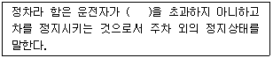
- 1분
- 3분
- 5분
- 10분
(정답률: 알수없음)
99. 다음 중 적색·황색·녹색화살표·녹색의 사색등화로 표시되는 신호등의 신호 순서 기준이 옳은 것은?
- 적색 → 황색 및 녹색화살표 → 황색 → 적색 → 녹색
- 적색 및 녹색화살표 → 황색 → 녹색 → 황색 → 적색
- 적색 → 황색 → 녹색화살표 → 황색 및 적색 → 녹색
- 적색 및 녹색화살표 → 녹색 → 황색 → 적색 → 황색
(정답률: 62%)
100. 다음 중 중앙도시교통정책심의위원회의 구성에 관한 설명으로 옳지 않은 것은?
- 중앙위원회는 위원장 및 부위원장 각 1명을 포함한 30명 이내의 위원으로 구성한다.
- 위원장은 국토해양부장관이 되고, 부위원장은 국토해양부의 육상교통업무를 담당하는 국장이 된다.
- 중앙위원회의 위원장이 교통, 도시철도, 도로 또는 도시계획에 관한 학식과 경험이 풍부한 사람 중에서 임명 또는 위촉하는 사람은 위원이 될 수 있다.
- 공무원이 아닌 위원의 임기는 2년으로 한다.
(정답률: 36%)
6과목: 교통안전
101. 다음 사고다발지점 선정 방법 중 부상(사고)의 유형에 따라 가중치를 부여하여 합계 점수가 가장 높은 지점을 선정하는 방법은?
- 사고피해정도에 의한 방법
- 사고율에 의한 방법
- 도로의 위험도 지수에 의한 방법 다. 도로의 위험도 지수에 의한 방법
- 시고발생 빈도수에 의한 방법
(정답률: 84%)
102. 어두운 터널에서 바깥의 밝은 곳으로 나올 때 눈이 잠시 동안 부셨다가 곧 회복되는 것을 무엇이라고 하는가?
- 암순응
- 명순응
- 난시
- 색약
(정답률: 90%)
103. 어느 지역의 교통사고 다발 지점을 개선한 경우 해당 개선 지점의 고통사고는 개선 전에 비해 감소하지만, 주변의 다른 지점에서 사고가 발생하는 경우가 있다. 이러한 현상은 다음 중 어떤 요인이 가장 큰 영향을 미치기 때문인가?
- 사고 이동(Accident Migration)
- 평균회귀 효과(Regression-to-Mean Effect)
- 위험 보정(Risk Compensation)
- 위험 회피(Threaten Avoidance)
(정답률: 77%)
104. 다음 중 일반적으로 교통약자(vulnerable road user)에 해당되지 않는 사람은?
- 어린이
- 경차 이용자
- 노인
- 임산부
(정답률: 알수없음)
1⑤. 교통사고의 유발요인을 크게 인적·도로환경적·차량요인으로 구분할 때 다음 중 인적요인에 해당하는 것은?
- 도로의 결빙
- 브레이크 파열
- 운전 중 전화통화
- 신호등 고장
(정답률: 80%)
106. 다음 중 제한된 시거에 의해 발생하는 비신호교차로에서의 직가충돌에 대한 일반적 예방책으로 적절하지 않은 것은?
- 가각주차제한
- 가로조명개선
- 횡단보도설치
- 시야장애물 제거
(정답률: 55%)
107. 약한 지주와 강한 레일로 구성되며 충격차량을 억제하기 위하여 주로 레일요소의 작용에 의존하는 노변방호책은?
- 연성방호책
- 반강성방호책
- 강성방호책
- 초강성방호책
(정답률: 72%)
108. 다음 중 지하횡단보도로 계획하는 경우와 가장 거리가 먼 것은?
- 도시 미관을 해칠 우려가 있는 경우
- 횡단보도육교에 비하여 공사비·공법 등이 유리한 경우
- 지장물로 인해 육교의 높이가 너무 높아 그 이용이 곤란한 경우
- 횡단 보행자가 극히 적은 공원 등의 경우
(정답률: 82%)
109. 50km의 도로구간에서 1년 동안 100건의 교통사고가 발생하였다. 조사 결과 일평균교통량이 8,000대, 총 사고건수 중 5%가 치명적인 사고였다면 차량 1억대·km당 치명적 사고발생률은 얼마인가?
- 2.74건/억대·km
- 3.42건/억대·km
- 4.78건/억대·km
- 5.61건/억대·km
(정답률: 알수없음)
110. 다음 중 도로교통안을 강화하기 위해 사용하는 3E에 포함되지 않는 것은?
- 교육(Education)
- 공학(Engineering)
- 권장(Encouragement)
- 단속(Enforcement)
(정답률: 70%)
111. 화살표와 기호로 사고에 관련된 차량이나 보행자의 경로, 사고의 유형 및 정도를 도식적으로 나타내는 것은?
- 사고지점도
- 충돌도
- 사고다발지점 리스트
- 현황도
(정답률: 62%)
112. 아래 그림과 같이 차량이 평탄한 길을 달리다가 10m 높이 아래로 추락하였다. 이 때 추락한 수평거리가 30m이었다면 추락 직전 수평방향의 속도(v)는 얼마인가?
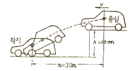
- 11m/sec
- 21m/sec
- 31m/sec
- 41m/sec
(정답률: 50%)
113. 차량의 미끄럼거리 추정에 관한 설명으로 옳지 않는 것은?
- 직선 미끄럼의 경우 차량의 미끄럼 거리는 그 차량의 모든 바퀴들의 미끄럼 흔적 중 가장 긴 미끄럼 흔적의 길이로 한다.
- 양후륜의 미끄럼 흔적들 모두가 전륜의 미끄럼 흔적을 벗어나지 않으면 직선 미끄럼으로 간주한다.
- 미끄럼 흔적 중간의 갭이 있을 경우 이를 포함하여 미끄럼 거리로 간주한다.
- 차륜의 미끄럼 흔적으로부터 추정된 미끄럼 거리는 사고차량의 초기속도 추정을 가능하게 한다.
(정답률: 알수없음)
114. 교통사고 현장에 나타나 있는 스키드마크(Skidmark)의 길이가 12m 이었다. 사고현장은 평지이고 타이어와 노면의 마찰계수는 0.8이라고 할 때 사고차량의 제동시 속도는?
- 약 44km/시
- 약 49km/시
- 약 54km/시
- 약 59km/시
(정답률: 50%)
115. 과거의 사고자료를 사용하지 않고, 충돌 가능성이 높은 곳에서 교통사고가 많이 발생한다는 가정하에 짧은 시간 동안 교통사고와 밀접한 관련이 있는 차량의 운행행태를 관측하여 그 장소의 사고위험성을 평가하는 방법은?
- 사고건수법
- 교통상충법
- 통계적방법
- 사고율법
(정답률: 82%)
116. 과속방지시설의 설치규격 표준은?
- 폭 : 2m, 높이 : 10cm
- 폭 : 2m, 높이 : 5cm
- 폭 : 3.6m, 높이 : 10cm
- 폭 : 3.6m, 높이 : 5cm
(정답률: 64%)
117. 다음 중 교통정온화(traffic calming) 기법의 차량의 속도를 감소시키기 위한 대책으로 거리가 먼 것은?
- 과속방지시설 설치
- 차로추가설치
- 차로굴절
- 노폭제한
(정답률: 77%)
118. 교통사고 분석의 내용에 해당하는 것과 거리가 먼 것은?
- 기본적인 사고통계 비교
- 사고방지 대책을 위한 예산배정
- 개발사고의 원인분석
- 사고 잦은 지점의 판별 및 사고특성 파악
(정답률: 91%)
119. 다음 중 교통사고의 원인 중 하나인 운전자에 관한 설명이 옳지 않은 것은?
- 운전자는 정보처리과정에서 단지 수동적 요소다.
- 운전자는 자신의 선택에 의하여 운전의 스트레스를 감소 또는 증가시키기도 한다.
- 운전자에 대한 환경적 요구는 시간에 따라 변한다.
- 운전자의 운전능력은 시간에 따라 변한다.
(정답률: 알수없음)
120. 교통사고 조사시 사고 현장의 도로상에서 발견되는 타이어마크(Tire mark)의 일종으로서 다음 그림과 같이 바퀴가 구르면서 동시에 핸들의 조향에 의하여 차량이 측방향으로 쏠리면서 생기는 것을 무엇이라 하는가?
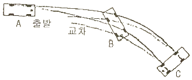
- 스키드마크(Skismark)
- 요마크(Yawmark)
- 임프린트(Imprint)
- 롤링마크(Rollingmark)
(정답률: 75%)